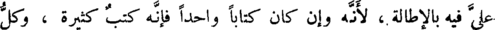
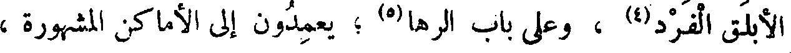
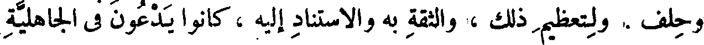
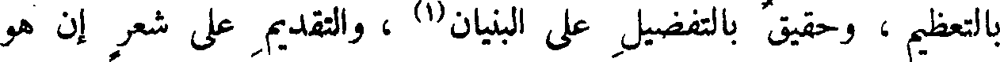

File: 000702.gt.txt (if the image is defective, simply delete all Arabic text and the line will be excluded)

دفع السبب ، ولم يجب عليه إحضار المسبب . فكتب الآباء ، تحبيب للأحياء ،
File: 000703.gt.txt (if the image is defective, simply delete all Arabic text and the line will be excluded)

ومحي لذكر الموتى .
File: 000704.gt.txt (if the image is defective, simply delete all Arabic text and the line will be excluded)

ولا بت ] ولا اتكأت ] إلا والكتاب موضوع على صدري(1) .
File: 000705.gt.txt (if the image is defective, simply delete all Arabic text and the line will be excluded)

وقال ابن الجهم : إذا غشيني النعاس في غير وقت نوم - وبئس الشيء
File: 000706.gt.txt (if the image is defective, simply delete all Arabic text and the line will be excluded)

النوم الفاضل(2) عن الحاجة - قال : فإذا اعتراني ذلك تناولت كتابا من
File: 000707.gt.txt (if the image is defective, simply delete all Arabic text and the line will be excluded)

كتب الحكم ، فأجد اهتزازي للفوائد ، والأريحية(3) التي تعتريني عند
File: 000708.gt.txt (if the image is defective, simply delete all Arabic text and the line will be excluded)

الظفر ببعض الحاجة ، والذي يغشى قلبي من سرور الاستبانة وعز التبيين
File: 000709.gt.txt (if the image is defective, simply delete all Arabic text and the line will be excluded)

أشد إيقاظا من نهيق الحمير وهدة الهدم .
File: 000710.gt.txt (if the image is defective, simply delete all Arabic text and the line will be excluded)

وقال ابن الجهم : إذا استحسنت الكتاب واستجدته ، ورجوت منه
File: 000711.gt.txt (if the image is defective, simply delete all Arabic text and the line will be excluded)

الفائدة ورأيت ذلك فيه - فلو تراني وأنا ساعة بعد ساعة أنظر كم بقي من ورقه
File: 000712.gt.txt (if the image is defective, simply delete all Arabic text and the line will be excluded)

مخافة استنفاده ، وانقطاع المادة من قلبه ، وإن كان المصحف عظيم الحجم
File: 000713.gt.txt (if the image is defective, simply delete all Arabic text and the line will be excluded)

كثير الورق ، كثير العدد - فقد تم عيشي وكمل سروري .
File: 000714.gt.txt (if the image is defective, simply delete all Arabic text and the line will be excluded)

وذكر العتبي (5) كتابا لبعض القدماء فقال : لولا طوله وكثرة ورقه
File: 000715.gt.txt (if the image is defective, simply delete all Arabic text and the line will be excluded)

الشعر بين السماطين في مديح الملوك أطالوا . وللإطالة موضع وليس ذلك
File: 000716.gt.txt (if the image is defective, simply delete all Arabic text and the line will be excluded)

بخطل ، وللإقلال موضع وليس ذلك من عجز .
File: 000717.gt.txt (if the image is defective, simply delete all Arabic text and the line will be excluded)

ولولا أني أتكل على أنك لا تمل باب القول في البعير حتى تخرج إلى
File: 000718.gt.txt (if the image is defective, simply delete all Arabic text and the line will be excluded)

الفيل ، وفي الذرة(1) حتى تخرج إلى البعوضة ، وفي العقرب حتى تخرج
File: 000719.gt.txt (if the image is defective, simply delete all Arabic text and the line will be excluded)

إلى الحية ، وفي الرجل حتى تخرج إلى المرأة ، وفي الذبان والنحل (2) حتى
File: 000720.gt.txt (if the image is defective, simply delete all Arabic text and the line will be excluded)

تخرج إلى الغربان والعقبان ، وفي الكلب حتى تخرج إلى الديك ، وفي
File: 000721.gt.txt (if the image is defective, simply delete all Arabic text and the line will be excluded)

الذئب حتى تخرج إلى السبع ، وفي الظلف حتى تخرج إلى الحافر ، وفي الحافر
File: 000722.gt.txt (if the image is defective, simply delete all Arabic text and the line will be excluded)

حتى تخرج إلى الخف ، وفي الخف حتى تخرج إلى البرثن ، وفي البرثن حتى
File: 000723.gt.txt (if the image is defective, simply delete all Arabic text and the line will be excluded)

تخرج إلى المخلب ، وكذلك القول في الطير وعامة الأصناف ، لرأيت أن
File: 000724.gt.txt (if the image is defective, simply delete all Arabic text and the line will be excluded)

جملة الكتاب(3) ، وإن كثر عدد ورقه ، أن ذلك ليس مما يمل ، ويعتد
File: 000725.gt.txt (if the image is defective, simply delete all Arabic text and the line will be excluded)

علي فيه بالإطالة ، لأنه وإن كان كتابا واحدا فإنه كتب كثيرة ، وكل
File: 000726.gt.txt (if the image is defective, simply delete all Arabic text and the line will be excluded)

مصحف منها فهو أم على حدة ، فإن أراد قراءة الجميع لم يطل عليه الباب
File: 000727.gt.txt (if the image is defective, simply delete all Arabic text and the line will be excluded)

الأول حتى يهجم على الثاني ، ولا الثاني حتى يهجم على الثالث ؛ فهو
File: 000728.gt.txt (if the image is defective, simply delete all Arabic text and the line will be excluded)

أبدا مستفيد ومستطرف ، وبعضه يكون جماما لبعض ، ولا يزال نشاطه
File: 000729.gt.txt (if the image is defective, simply delete all Arabic text and the line will be excluded)

زائدا . ومتى خرج من آي القرآن صار إلى الأثر ، ومتى خرج من أثر
File: 000730.gt.txt (if the image is defective, simply delete all Arabic text and the line will be excluded)

صار إلى خبر ، ثم يخرج من الخبر إلى شعر ، ومن الشعر إلى نوادر ، ومن
File: 000731.gt.txt (if the image is defective, simply delete all Arabic text and the line will be excluded)

النوادر إلى حكم عقلية ، ومقاييس سداد(4) ، ثم لا يترك هذا الباب ؛ ولعله
File: 000732.gt.txt (if the image is defective, simply delete all Arabic text and the line will be excluded)

وعلى باب سمرقند(1) ، وعلى عمود مأرب(2) ، وعلى ركن المشقر(3) ، وعلى
File: 000733.gt.txt (if the image is defective, simply delete all Arabic text and the line will be excluded)

الأبلق الفرد(4) ، وعلى باب الرها(5) ؛ يعمدون إلى الأماكن المشهورة ،
File: 000734.gt.txt (if the image is defective, simply delete all Arabic text and the line will be excluded)

والمواضع المذكورة ، فيضعون الخط في أبعد المواضع من الدثور، وأمنعها من
File: 000735.gt.txt (if the image is defective, simply delete all Arabic text and the line will be excluded)

الدروس ، وأجدر أن يراها من مر بها ، ولا تنسى على وجه الدهر .
File: 000737.gt.txt (if the image is defective, simply delete all Arabic text and the line will be excluded)

وأقول : لولا الخطوط لبطلت العهود والشروط والسجلات والصكاك،
File: 000738.gt.txt (if the image is defective, simply delete all Arabic text and the line will be excluded)

وكل إقطاع ، وكل إنفاق، وكل أمان ، وكل عهد وعقد ، وكل جوار
File: 000739.gt.txt (if the image is defective, simply delete all Arabic text and the line will be excluded)

وحلف . ولتعظيم ذلك ، والثقة به والاستناد إليه ، كانوا يدعون في الجاهلية
File: 000740.gt.txt (if the image is defective, simply delete all Arabic text and the line will be excluded)

من يكتب لهم ذكر الحلف والهدنة ؛ تعظيما للأمر ، وتبعيدا من النسيان ،
File: 000741.gt.txt (if the image is defective, simply delete all Arabic text and the line will be excluded)

ولذلك قال الحارث بن حلزة ، في شأن بكر وتغلب(6) :
File: 000743.gt.txt (if the image is defective, simply delete all Arabic text and the line will be excluded)

معلوما أن شيئا هذه بقيته وفضلته وسؤره وصبابته ، وهذا مظهر حاله على
File: 000744.gt.txt (if the image is defective, simply delete all Arabic text and the line will be excluded)

شدة الضيم ، وثبات قوته على ذلك الفساد وتداول النقص ، حري
File: 000745.gt.txt (if the image is defective, simply delete all Arabic text and the line will be excluded)

بالتعظيم ، وحقيق بالتفضيل على البنيان(1) ، والتقديم على شعر إن هو
File: 000746.gt.txt (if the image is defective, simply delete all Arabic text and the line will be excluded)

حول تهافت ، ونفعه مقصور على أهله ، وهو يعد من الأدب المقصور ،
File: 000747.gt.txt (if the image is defective, simply delete all Arabic text and the line will be excluded)

وليس بالمبسوط ؛ ومن المنافع الاصطلاحية وليست بحقيقة بينة(2) ، وكل
File: 000748.gt.txt (if the image is defective, simply delete all Arabic text and the line will be excluded)

شيء في العالم من الصناعات والأرفاق والآلات ، فهي موجودات(3) في هذه
File: 000749.gt.txt (if the image is defective, simply delete all Arabic text and the line will be excluded)
الكتب دون الأشعار ، وهاهنا كتب هي بيننا وبينكم ، مثل كتاب
File: 000750.gt.txt (if the image is defective, simply delete all Arabic text and the line will be excluded)

أقليدس ، ومثل كتاب جالينوس ، ومثل المجسطى(4) ، مما تولاه الحجاج(5) ،
File: 000751.gt.txt (if the image is defective, simply delete all Arabic text and the line will be excluded)

41 وكتب كثيرة لا تحصى فيها بلاغ للناس ، وإن كانت مختلفة ومنقوصة
File: 000752.gt.txt (if the image is defective, simply delete all Arabic text and the line will be excluded)

مظلومة ومغيرة(6) ، فالباقي كاف شاف ، والغائب منها كان تكميلا لتسلط
File: 000753.gt.txt (if the image is defective, simply delete all Arabic text and the line will be excluded)

الطبائع الكاملة .